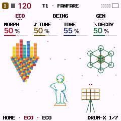
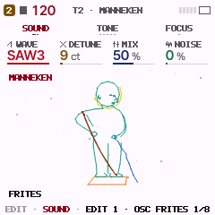
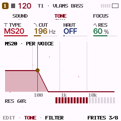
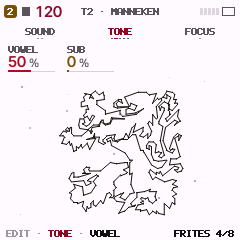
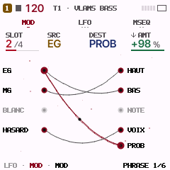
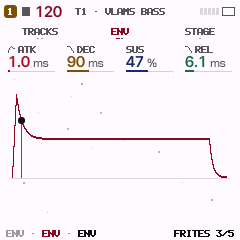
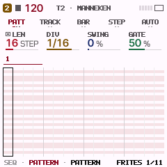
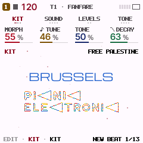

Make your first sound & beat
Faire ton premier son et ton premier beat
BRUSSELS is a custom firmware for the M-VAVE FM-1 (built on JIANT / Felucca). It adds a heavy MS-20 style analog synth with 4 patch cables, 22 original Brussels sounds, a Belgian New Beat drum kit, and crisp white-mode screens. Just where to press and what you hear.
BRUSSELS est un programme personnalisé pour le M-VAVE FM-1 (basé sur JIANT / Felucca). Il ajoute un gros synthé analogique esprit MS-20 avec 4 câbles, 22 sons originaux de Bruxelles, une batterie New Beat et un écran clair. Juste où appuyer et ce que tu entends.
Before installing on a real FM-1: use Chrome, Brave, or Edge (Safari has no WebMIDI). Keep a copy of the stock M-VAVE FM-1.fwsc file. If an update ever stops halfway, hold OCT− + OCT+ for 5 seconds to enter UBOOT recovery.
Avant d'installer sur un vrai FM-1 : utilise Chrome, Brave ou Edge (Safari n'a pas WebMIDI). Garde le fichier M-VAVE FM-1.fwsc d'origine. Si une mise à jour s'interrompt, tiens OCT− + OCT+ pendant 5 secondes pour ouvrir le mode secours UBOOT.
1A. Quick Start — Play, Record, Erase & Save (No Synth Knowledge Needed)
1A. Démarrer — Jouer, Enregistrer, Effacer & Sauver (zéro jargon synthé)
Never used a synthesizer before? Start here. Words in CAPITALS match the screen. Rounded tags like PRESETS are knobs you turn. Square tags like REC are buttons you press.
Tu n'as jamais touché un synthé ? Commence ici. Les mots en MAJUSCULES sont ceux de l'écran. Les pastilles rondes comme PRESETS sont des molettes à tourner. Les touches carrées comme REC sont des boutons à appuyer.
Pick a track and a sound
Choisir une piste et un son
Turn ALGORITHM (left of the screen) to pick a track from T1 to T6 (T1 is drums, T2 is MANNEKEN bass/synth). Turn PRESETS to pick a sound (try FRITES or NEW BEAT). Play the bottom keys.
Tourne ALGORITHM (à gauche de l'écran) pour choisir une piste de T1 à T6 (T1 = batterie, T2 = synthé MANNEKEN). Tourne PRESETS pour choisir un son (essaie FRITES ou NEW BEAT). Joue sur les touches en bas.
Record a sequence live
Enregistrer une séquence en direct
Press PLAY/STOP to start the loop, then press REC. Play your beat or melody on the keys — it records straight into the loop. Press REC again when you want to stop recording while keeping the loop playing.
Appuie sur PLAY/STOP pour lancer la boucle, puis sur REC. Joue ton rythme ou ta mélodie sur les touches : tout s'enregistre en direct. Rappuie sur REC pour arrêter d'enregistrer tout en laissant la boucle tourner.
Choose the number of steps: 1 to 64 steps per track
Choisir le nombre de pas : de 1 à 64 pas par piste
By default each track loops over 16 steps (1 bar). You can stretch any track up to 64 steps (4 bars): press SEQ to open PATTERN (or hold SEQ anywhere) and turn KNOB 1 (LEN) to pick 16, 32, 48, 64 — or any number from 1 to 64. On SEQ → STEP, KNOB 1 scrolls through all 64 steps (shown 16 at a time). Each of the 6 tracks can have its own length.
Par défaut chaque piste tourne sur 16 pas (1 mesure). Tu peux l'allonger jusqu'à 64 pas (4 mesures) : appuie sur SEQ sur la page PATTERN (ou tiens SEQ depuis n'importe où) et tourne KNOB 1 (LEN) sur 16, 32, 48, 64 — ou n'importe quel chiffre de 1 à 64. Sur SEQ → STEP, KNOB 1 parcourt tous les 64 pas (affichés 16 par 16). Chaque piste peut avoir sa propre longueur.
Switch between sequences (A, B, C, D) & build a full song
Changer de séquence (A, B, C, D) et construire une chanson
One project holds 4 separate sections (A, B, C, D) — for example A = intro, B = verse, C = chorus, D = break. Each section keeps its own 6 tracks (sounds + up to 64 steps).
1. Switch section live (try it on the emulator or FM-1!): hold SAVE and tap the first 4 keys to jump between A, B, C, D — or press SAVE → PROJECT and turn KNOB 1.
2. Load a ready-made pattern onto 1 track: press SEQ and turn PRESETS, then press OCT+ to load (OCT− cancels).
3. Chain sections into a song: press SAVE → turn SELECT to ARRANGE. Press OCT+ to add a row (up to 16 rows), pick which section (A–D) and how many bars it plays (e.g. A×4 → B×8 → C×4 → A×4), then press PLAY/STOP.
Un projet contient 4 parties indépendantes (A, B, C, D) — par exemple A = intro, B = couplet, C = refrain, D = break. Chaque partie garde ses propres 6 pistes (sons + jusqu'à 64 pas).
1. Changer de partie en direct (à tester sur l'émulateur ou le FM-1 !) : tiens SAVE et appuie sur les 4 premières touches pour sauter entre A, B, C et D — ou appuie sur SAVE → PROJECT et tourne KNOB 1.
2. Charger une séquence prête sur 1 piste : appuie sur SEQ et tourne PRESETS, puis OCT+ pour charger (OCT− annule).
3. Enchaîner les parties en vraie chanson : appuie sur SAVE → tourne SELECT sur ARRANGE. Appuie sur OCT+ pour ajouter une ligne (jusqu'à 16 lignes), choisis la partie (A–D) et son nombre de mesures (ex. A×4 → B×8 → C×4 → A×4), puis lance PLAY/STOP.
Erase a note, clear a track, or delete a song
Effacer une note, vider une piste ou supprimer une partie
Metronome (instant, from any page): hold REC + turn KNOB 1 (or press the 2nd white piano key on the FM-1) to cycle CLICK: OFF (silent) / REC (only while recording) / ON (always while playing). Volume & count-in: hold HOME → AUDIO.
Clear only the active track (instant): hold REC + press the 1st white piano key (far left = CLEAR). Hold SEQ + REC to clear all tracks.
Erase 1 note: press SEQ → STEP → pick the step with KNOB 1 → turn KNOB 3 (TIME) to REST (or hold SEQ + press the last white piano key on the far right).
Métronome (direct, depuis n'importe quelle page) : maintiens REC + tourne KNOB 1 (ou appuie sur la 2e touche blanche du clavier du FM-1) pour basculer CLICK : OFF (silencieux) / REC (seulement en enregistrement) / ON (toujours actif en lecture). Volume et pré-décompte : maintiens HOME → AUDIO.
Vider uniquement la piste active (direct) : maintiens REC + appuie sur la 1re touche blanche du clavier (tout à gauche = CLEAR). Maintiens SEQ + REC pour vider toutes les pistes.
Effacer 1 note : SEQ → STEP → choisis le pas avec KNOB 1 → tourne KNOB 3 (TIME) sur REST (ou maintiens SEQ + appuie sur la dernière touche blanche tout à droite).
Save a sound & save your song
Sauvegarder un son et sauvegarder ta chanson
Save a sound: press SAVE → turn SELECT to USER → pick a SLOT with KNOB 1 → press OCT+ (SAVE), name it, and confirm with OCT+. (On the same page you can also LOAD or ERASE a saved sound.)
Save your whole song: press PLAY/STOP to stop playback first, press SAVE → PROJECT → pick a SLOT with KNOB 1 → press OCT+ (SAVE).
Sauvegarder un son : appuie sur SAVE → tourne SELECT sur USER → choisis un SLOT avec KNOB 1 → appuie sur OCT+ (SAVE), donne-lui un nom et confirme avec OCT+. (Au même endroit tu peux aussi LOAD ou ERASE un son.)
Sauvegarder toute ta chanson : arrête d'abord la lecture (PLAY/STOP), appuie sur SAVE → PROJECT → choisis un SLOT avec KNOB 1 → appuie sur OCT+ (SAVE).
1B. Quick Start — Shape Your Sound (Synth & Envelopes in 30 Seconds)
1B. Bases du synthé — Sculpter le son et les enveloppes en 30 secondes
Once your loop is playing, use these 4 screens to transform any sound from soft and round to aggressive and alive:
Une fois que ta boucle tourne, utilise ces 4 écrans pour transformer n'importe quel son, du plus rond au plus mordant :
Filter: dark & deep vs. bright & acid (EDIT → FILTER)
Filtre : sombre & grave ou brillant & acide (EDIT → FILTER)
Press EDIT, turn SELECT to FILTER. Turn KNOB 2 (CUT) left to muffle the sound or right to open it up. Turn KNOB 4 (RES) up to make the MS-20 filter whistle.
Appuie sur EDIT, tourne SELECT sur FILTER. Tourne KNOB 2 (CUT) à gauche pour étouffer le son ou à droite pour l'ouvrir. Monte KNOB 4 (RES) pour faire siffler le filtre MS-20.
Envelope: short punch vs. slow pad (ENV)
Enveloppe : coup sec ou nappe lente (ENV)
Press ENV. KNOB 1 (ATK) = how fast the note starts. KNOB 2 (DEC) = how fast it drops. KNOB 3 (SUS) = level while you hold the key. KNOB 4 (REL) = how long the sound fades out after you let go.
Appuie sur ENV. KNOB 1 (ATK) = vitesse de départ. KNOB 2 (DEC) = vitesse de descente. KNOB 3 (SUS) = volume tant que tu tiens la touche. KNOB 4 (REL) = longueur de queue quand tu lâches.
Keep heavy bass underneath (EDIT → VOWEL → SUB)
Garder un gros grave propre en dessous (EDIT → VOWEL → SUB)
On MANNEKEN, turn SELECT to VOWEL. KNOB 1 (VOWEL) makes the synth talk (A·E·I·O·U); KNOB 2 (SUB) adds a pure clean sub-bass straight to the output.
Sur MANNEKEN, tourne SELECT sur VOWEL. KNOB 1 (VOWEL) fait parler le synthé (A·E·I·O·U) ; KNOB 2 (SUB) ajoute un grave pur directement en sortie.
Make the sound move by itself (LFO → MOD)
Faire bouger le son tout seul (LFO → MOD)
Load PHRASE or CHAOS BAS and press LFO. Each of the 4 cables connects a movement (SRC: EG, MG, HASARD, CHAOS) to a target (DEST: BAS, HAUT, VOIX, PROB). Turn KNOB 4 (AMT) to dial the amount.
Charge PHRASE ou CHAOS BAS et appuie sur LFO. Chacun des 4 câbles relie une source (SRC : EG, MG, HASARD, CHAOS) à une cible (DEST : BAS, HAUT, VOIX, PROB). Tourne KNOB 4 (AMT) pour doser.
2. Exact FM-1 Panel Layout
2. Plan exact de la façade du FM-1
Every knob, button, and key below is in the exact spot where it sits on your real M-VAVE FM-1.
Chaque molette, bouton et touche ci-dessous est placé exactement au même endroit que sur ton vrai M-VAVE FM-1.
Do this → Get that
Je veux… → Je fais…
| What you wantCe que tu veux | Where to press / turnOù appuyer / tourner |
|---|---|
| Master volumeVolume général | MASTER (top left)(en haut à gauche) |
| Switch track (T1–T6)Changer de piste (T1–T6) | ALGORITHM (works on any screen)(marche depuis n'importe quel écran) |
| Load another soundCharger un autre son | PRESETS |
| Step through pages inside a sectionPasser d'une page à l'autre dans une section | SELECT (or press the section button again)(ou rappuyer sur le bouton de la section) |
| Adjust the 4 values on screenRégler les 4 valeurs à l'écran | KNOB 1 KNOB 2 KNOB 3 KNOB 4 |
| Change tempo (BPM)Changer le tempo (BPM) | HoldTenir GLO + turntourner SELECT |
| Shift keyboard octaveMonter / descendre d'une octave | OCT− / OCT+ (under PRESETS & ALGORITHM)(sous PRESETS et ALGORITHM) |
| Open / close Machine Menu (colors, MIDI, USB)Ouvrir / fermer le Menu Machine (couleurs, MIDI, USB) | HoldTenir HOME (~0.5 s) |
| Play / stop patternLancer / arrêter la boucle | PLAY/STOP |
| Record live while playingEnregistrer en direct | PLAY/STOP + REC, then play keyspuis jouer les touches |
| Save song or soundSauvegarder un morceau ou un son | SAVE + SELECT |
| Firmware rescue mode (UBOOT)Mode secours mise à jour (UBOOT) | HoldTenir OCT− + OCT+ for 5 secondspendant 5 secondes |
3. Reading the Screen
3. Comment lire l'écran
Every BRUSSELS screen has the same 4 bands from top to bottom:
Chaque écran BRUSSELS suit toujours les mêmes 4 bandes de haut en bas :
1. Top bar
1. Ligne du haut
Pattern number, play/stop icon, BPM (120), track & engine name (T2 · MANNEKEN), and CPU/battery meter.
Numéro de pattern, lecture/stop, BPM (120), piste et moteur (T2 · MANNEKEN) et témoin à droite.
2. Tabs + 4 values
2. Onglets + 4 valeurs
The underlined tab is open. The 4 columns underneath always match KNOB 1 to KNOB 4 from left to right.
L'onglet souligné est actif. Les 4 colonnes dessous correspondent toujours à KNOB 1 → KNOB 4 de gauche à droite.
3. Live picture
3. Visuel vivant
Engine drawing, filter curve, 4 MS-20 patch cables, ADSR envelope, or step piano roll.
Dessin du moteur, courbe du filtre, les 4 câbles MS-20, enveloppe ADSR ou pas du séquenceur.
4. Bottom line
4. Ligne tout en bas
Left: current path (e.g. EDIT · TONE · FILTER). Right: sound name & page number (e.g. FRITES 3/8).
À gauche : où tu es (EDIT · TONE · FILTER). À droite : nom du son et page (FRITES 3/8).
The 8 Sound Engines
Les 8 moteurs de son
| On ScreenÀ l'écran | Sound typeType de son | DrawingDessin |
|---|---|---|
| MANNEKEN | Analog & MS-20 synth (47 sounds, incl. 22 BRUSSELS)Synthé analogique & MS-20 (47 sons dont 22 BRUSSELS) | Manneken-Pis + cablesManneken-Pis + câbles |
| FANFARE | 8-piece drum machine (808, 909, NEW BEAT…)Batterie 8 pièces (808, 909, NEW BEAT…) | Brussels FanfareFanfare bruxelloise |
| THEO PISSBOY | Phase Distortion synth (incl. SOUND OF C)Phase Distortion (dont SOUND OF C) | Théo |
| ATOMIUM | 6-op FM synth (EPs, bells, basses)Synthé FM 6 opérateurs (pianos, cloches, basses) | Atomium |
| SALADE TOUT | Birds, calls & organic synthOiseaux, appels et sons organiques | Birds / creaturesOiseaux / créatures |
| SNCB | Lo-Fi, Bytebeat & ChiptuneLo-Fi, Bytebeat & Chiptune | SNCB trainTrain SNCB |
| GROTE MARKT | Tonewheel organOrgue à roues phoniques | Grand-Place gablesPignons Grand-Place |
| PLUIE | Wind, rain & tape texturesVent, pluie et souffle | Rain / pigeonsPluie / pigeons |
4. Every Screen Explained
4. Chaque écran expliqué

HOME — All 6 Tracks at a GlanceTes 6 pistes d'un coup d'œil
Shows your active tracks as Brussels characters (fries cone, Manneken-Pis, Atomium, waffle) moving as they play. KNOB 1–KNOB 4 control the 4 main knobs of the selected track.
Affiche tes pistes actives sous forme de personnages bruxellois (frites, Manneken-Pis, Atomium, gaufre). KNOB 1 à KNOB 4 contrôlent les 4 réglages principaux de la piste active.

EDIT · OSC — Raw OscillatorsLes oscillateurs
| KNOB 1 WAVE | Wave shape (SAW3, TRI, SINE, PWM…)Forme d'onde (SAW3, TRI, SINE, PWM…) |
| KNOB 2 DETUNE | Detunes Osc 2 for a wider, thicker toneDésaccorde l'oscillateur 2 pour épaissir le son |
| KNOB 3 MIX | Balance between Osc 1 and Osc 2Équilibre entre oscillateur 1 et 2 |
| KNOB 4 NOISE | White noise / breath before the filterBruit / souffle avant le filtre |
One click right on SELECT opens FLT (page 2/8): CUT, RES, DRIVE, FENV.
Un cran à droite sur SELECT ouvre FLT (page 2/8) : CUT, RES, DRIVE, FENV.

EDIT · FILTER — MS-20 Filter & HAUTFiltre MS-20 et HAUT
| KNOB 1 TYPE | Filter type (MS20 is the biting BRUSSELS filter)Type de filtre (MS20 est le filtre mordant BRUSSELS) |
| KNOB 2 CUT | Lowpass cutoff (left = dark, right = bright)Coupure passe-bas (gauche = sombre, droite = clair) |
| KNOB 3 HAUT | Highpass before MS-20 (OFF = full bass)Coupe-haut avant le MS-20 (OFF = tout le grave) |
| KNOB 4 RES | Resonance peak — screams above 60%Résonance — siffle au-dessus de 60 % |
Each note of a chord has its own dedicated MS-20 filter.
Chaque note d'un accord dispose de son propre filtre MS-20.

EDIT · VOWEL — Mouth Filter & Clean SUBVoyelle et SUB droit
| KNOB 1 VOWEL | Mouth shape A · E · I · O · U (0% = off)Bouche A · E · I · O · U (0% = éteint) |
| KNOB 2 SUB | Pure sine sub added after all filters — stays heavy even with high HAUT or VOWELGrave pur ajouté après les filtres — reste lourd même avec HAUT ou VOWEL monté |

LFO · MOD — 4 MS-20 Patch CablesLes 4 câbles MS-20
| KNOB 1 SLOT | Pick cable 1/4 to 4/4Choisit le câble 1/4 à 4/4 |
| KNOB 2 SRC | Movement: EG, MG, HASARD (step dice), ROSE (pink drift), EUCL (3-in-8), CHAOSSource : EG, MG, HASARD (dé par pas), ROSE (dérive), EUCL (3-dans-8), CHAOS |
| KNOB 3 DEST | Target: BAS (lowpass), HAUT (highpass), NOTE, VOIX (vowel), PROB (dice odds!)Cible : BAS (passe-bas), HAUT (coupe-haut), NOTE, VOIX (voyelle), PROB (chance du dé !) |
| KNOB 4 AMT | Depth (0% = off, + forward, − inverted)Force (0% = éteint, + normal, − inversé) |

ENV — Note Shape (ADSR)Forme de la note (ADSR)
| KNOB 1 ATK | Start speed (1 ms = snappy, high = slow fade-in)Vitesse de départ (1 ms = sec, élevé = fondu lent) |
| KNOB 2 DEC | Drop from peak to held levelDescente après le pic |
| KNOB 3 SUS | Volume while holding the keyVolume tant que tu tiens la touche |
| KNOB 4 REL | Tail length after releasing the keyLongueur de queue après avoir lâché |

SEQ — Step SequencerSéquenceur pas à pas
| KNOB 1 STEP | Pick step 1/16 to 16/16Choisit le pas 1/16 à 16/16 |
| KNOB 2 NOTE | Set the note (or just press a key)Note du pas (ou appuie sur une touche) |
| KNOB 3 TIME | Note length, tie, or restLongueur, liaison ou silence |
| KNOB 4 FLAG | Accent, slide, or trigger ruleAccent, glissando ou règle |
Fastest way: press PLAY/STOP + REC and play the keys live.
Le plus simple : PLAY/STOP + REC, puis joue directement sur les touches.

FANFARE — Drum Kits (808, 909, NEW BEAT)Batteries (808, 909, NEW BEAT)
| C4 (B) | KickGrosse caisse | F4 (,) | Tom |
| C♯4 (H) | Rim | F♯4 (L) | Closed Hi-hatCharleston fermé |
| D4 (N) | SnareCaisse claire | A♯4 (') | Open Hi-hatCharleston ouvert |
| D♯4 (J) | Clap | C♯5 (E) | Bell / CowbellCloche / Cowbell |
One octave higher (OCT+), holding any drum key plays automatic rolls.
Une octave plus haut (OCT+), tenir une touche fait des roulements automatiques.
5. All BRUSSELS Sounds
5. Tous les sons BRUSSELS
The 22 original BRUSSELS sounds sit at the end of MANNEKEN (presets 25–46), plus SOUND OF C on THEO PISSBOY and 3 drum kits on FANFARE.
Les 22 sons originaux BRUSSELS sont à la fin de MANNEKEN (presets 25–46), plus SOUND OF C sur THEO PISSBOY et 3 kits sur FANFARE.
| NameNom | ModeJeu | What you hearCe qu'on entend |
|---|---|---|
| FRITES | MONO | Biting MS-20 bass with slow LFO filter sweep.Basse MS-20 mordante, LFO lent sur le filtre. |
| ZUKUNFT | MONO | Dark, smooth bass, no attack click; slow filter & highpass drift.Sombre, vague lisse sans claquement ; filtre et coupe-haut lents. |
| DIKKENEK | MONO | Tight, deep sub bass with long echo and sustain.Corps serré, grave profond, écho long et tenue longue. |
| STOEMP | CHORD | Warm moving PWM pad with slow filter breathing.Nappe PWM chaude qui bouge toute seule. |
| MOLENBEEK | MONO | Dark tritone bass, dry (no chorus), wide slow sweep.Sombre, intervalle tendu, sec sans chorus, filtre large. |
| IXELLES | CHORD | Two oscillators rubbing a minor third apart; gentle highpass motion.Deux oscillateurs à la tierce mineure ; coupe-haut mouvant. |
| TROTINETTE | CHORD | Playful fifth-up chord stab with short echo.Vif, quinte au-dessus, court écho. |
| PIKNIK | CHORD | Warm lush chorus pad (LFO moves the chorus).Chaud, gros chorus mouvant. |
| STIB DELAY | CHORD | Long late echo answering after you release the chord.Long écho qui répond après l'accord. |
| MADOU | CHORD | Tense dark chord, semitone rub, snappy & gritty.Sombre et serré, frottement d'un demi-ton, attaque sèche. |
| HELMET | CHORD | Heaviest chord sound: huge body, long echo & space.Le plus lourd en accord : gros corps, long écho et espace. |
| LOUISE | CHORD | Airy warm pad whose volume gently breathes.Chaud et aéré, l'accord respire sur le volume. |
| RIBAUCOURT | CHORD | Slow-attack chord that wanders left to right.Attaque douce, l'accord se promène gauche/droite. |
| OSTEND | CHORD | North Sea swell: breathy, round, very slow crest and tide.La mer du Nord : rond, souffle, vague très lente. |
| EG BAS | CABLE | Cable 1 patches envelope (EG) to lowpass (BAS).Câble 1 : enveloppe (EG) vers passe-bas (BAS). |
| RANDOM KINDNESS | CABLE | Smooth bass where a 1-in-8 step dice (HASARD) pops the filter.Basse lisse où le dé (HASARD, 1/8 par pas) ouvre le filtre. |
| NOTE VOLEE | CABLE | Soft lead with echo; HASARD gently bends random notes.Lead doux avec écho ; HASARD glisse certaines notes. |
| ROSE HAUT | CABLE | Pink noise (ROSE) makes the highpass wander smoothly.Bruit rose (ROSE) faisant errer le coupe-haut. |
| EUCLIDE | CABLE | 3-in-8 Euclidean clock (EUCL) steps the filter in rhythm.Horloge euclidienne 3-dans-8 (EUCL) sur le filtre. |
| CHAOS BAS | CABLE | Chaos (CHAOS) moves BAS and HAUT for 16,455 steps without repeating.Chaos (CHAOS) sur BAS et HAUT : 16 455 pas sans répétition. |
| SOUS SOL | SUB | Clean SUB (92%) bypasses filters under a singing top.SUB pur (92 %) hors filtres sous un haut qui chante. |
| PHRASE | 4 CABLES | EG → BAS, EG → PROB (attack boosts dice odds), HASARD → VOIX, MG → HAUT.EG → BAS, EG → PROB (l'attaque ouvre le dé), HASARD → VOIX, MG → HAUT. |
| SOUND OF C | PHASE | Belgian New Beat chord on THEO PISSBOY (last preset).Accord New Beat culte sur THEO PISSBOY (dernier preset). |
| NEW BEAT | DRUM | Long saturated kick, dry snare, dark hats & cowbell.Grosse caisse longue saturée, caisse claire sèche, hats sombres, cowbell. |
| 808 BOOM | DRUM | Long booming 808 kick and lengthened hi-hat.Grosse caisse 808 longue et charleston net. |
| 909 CLUB | DRUM | Punchy 909 club drum kit.Kit 909 club percutant. |
6. Good to Know
6. Bon à savoir
- 6 tracks at once (T1–T6). Only one FANFARE drum kit per section.
- 6 pistes simultanées (T1–T6). Un seul kit batterie FANFARE par section.
- Up to 8 voices on MANNEKEN — each voice has its own MS-20 filter.
- Jusqu'à 8 voix sur MANNEKEN — chaque voix a son propre filtre MS-20.
- 4 patch cables per track (SLOT 1/4–4/4).
- 4 câbles par piste (SLOT 1/4–4/4).
- No WAV samples — every drum and synth is synthesized live.
- Pas de samples WAV — tout est synthétisé en direct.
- USB name: BRUSSELS (and BRUSSELS Update during updates).
- Nom USB : BRUSSELS (et BRUSSELS Update pendant les mises à jour).
7. Install & Rescue (UBOOT)
7. Installer & Secours (UBOOT)
- Close any DAW (Ableton, Logic…) holding the USB MIDI port.
- Ferme tout DAW (Ableton, Logic…) qui pourrait occuper le port USB MIDI.
- Open the installer in Chrome, Brave, or Edge: BRUSSELS WebMIDI Installer.
- Ouvre l'installeur dans Chrome, Brave ou Edge : Installateur WebMIDI BRUSSELS.
- Plug in the powered-on FM-1 with a data USB cable, click Install, and wait until it reboots.
- Branche le FM-1 allumé avec un câble USB data, clique sur Install et attends le redémarrage complet.
Rescue mode (UBOOT): hold OCT− + OCT+ for 5 seconds (countdown starts at 2 s; release early to cancel). When UBOOT appears, tick Resume an interrupted update in the installer — or flash stock FM-1.fwsc to restore factory firmware.
Mode secours (UBOOT) : tiens OCT− + OCT+ pendant 5 secondes (compte à rebours à 2 s ; lâcher annule). Quand UBOOT s'affiche, coche Resume an interrupted update dans l'installeur — ou recharge FM-1.fwsc pour revenir d'usine.